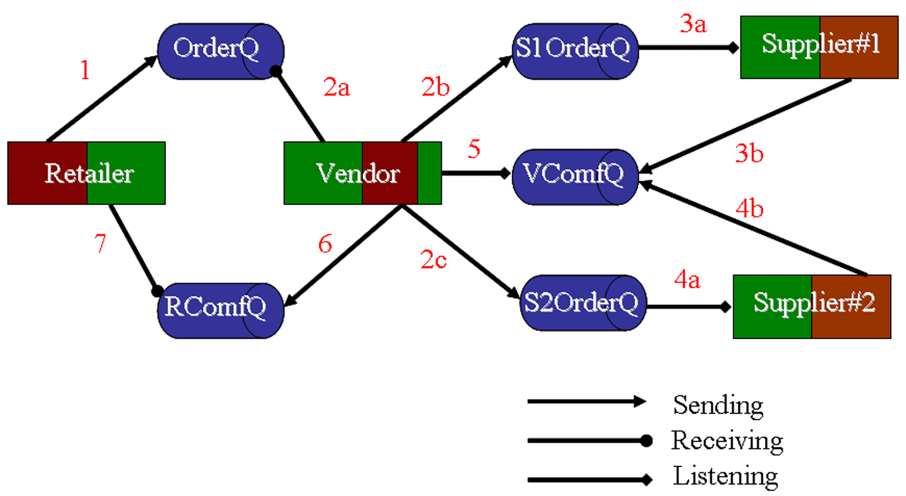
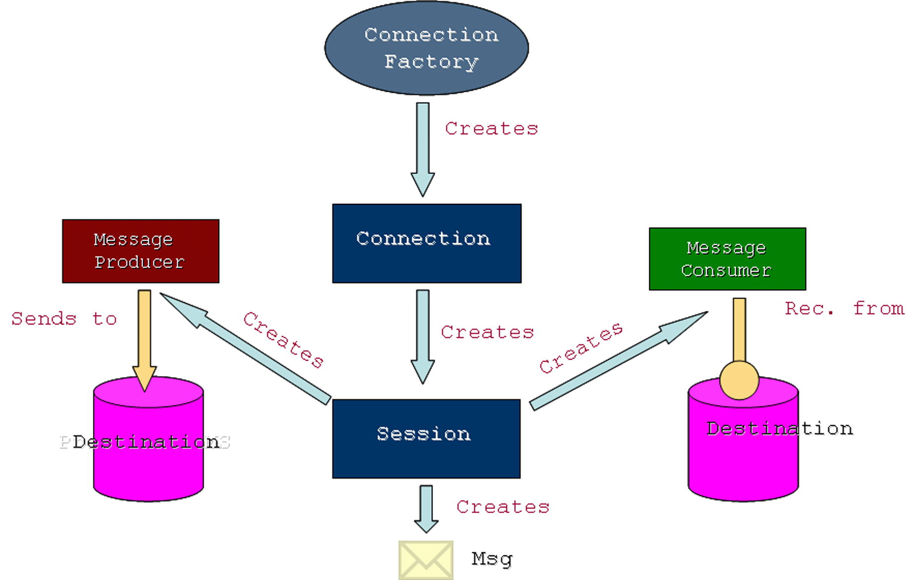
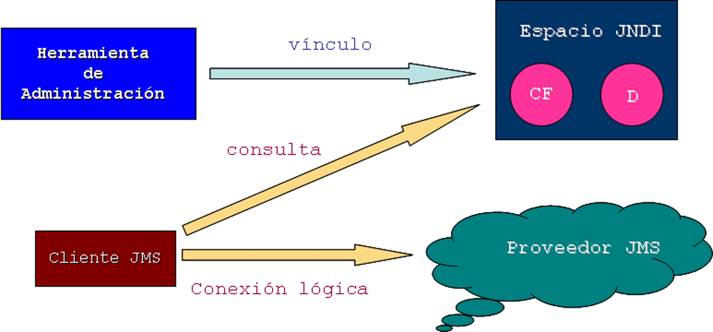
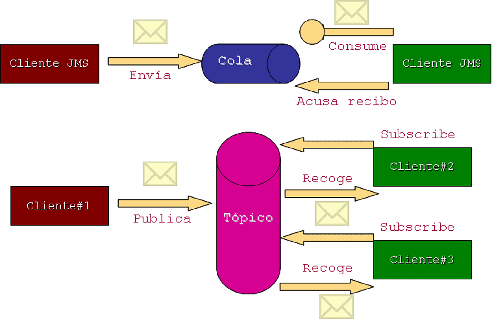

JMS (Java Message Service) (1)
JMS: Integración de componentes
Un sistema de mensajes es una facilidad peer-to-peer: un cliente de mensajería puede enviar mensajes a, o recibir mensajes de, otro cliente. Basta con que ambos se conecten a agentes de mensajería que proporcionen facilidades de creación, envío, recepción y lectura de mensajes. Los mensajes permiten una comunicación distribuída débilmente acoplada: una componente envía un mensaje a un destino y el receptor lo recoge de dicho destino. Solamente se ponen de acuerdo en el destino. A diferencia del e-mail JMS permite comunicación entre aplicaciones o compononentes software.
Como escenario ejemplo complejo veamos la siguiente situación tomada del excelente tutorial de Kim Haase:
1. Un minorista (retailer) envía un mensaje a una cola de vendedor (VendorOrderQ) con el pedido de un determinado número de ordenadores.
2. El vendedor recibe el pedido y lo traslada a las colas de cada uno de sus proveedores (SupplierOrderQ), todo ello dentro de una transacción JMS. Esta transacción combina una recepción asíncrona con múltiples envíos.
3. Cada proveedor (supplier) recibe el pedido de su cola, comprueba su inventario y envía los ordenadores pedidos en el campo JMSReplyTo. Si un proveedor no tiene suficientes ordenadores en stock entonces envía los que tenga. La recepción síncrona y el envío tiene lugar dentro de una transacción.
4. Lo mismo hace el otro proveedor.
5. El vendedor recibe las respuestas de sus proveedores de su cola de confirmación (VendorComfirmQ) y actualiza el estado del pedido. Los mensajes son procesados por un oyente asíncrono de mensajes. Este paso ilustra el uso de transacciones JMS con un message listener.
6. Cuando todas las respuestas esperadas han sido procesadas por el vendedor, éste envía un mensaje notificando al minorista si puede cumplir el pedido.
7. El minorista recibe el mensaje del vendedor.

Arquitectura JMS
JMS es una especificación orientada a posibilitar la comunicación entre componentes software (p.e. aplicacinones). Esta comunicación es muy necesaria en aplicaciones de empresa en donde los distintos módulos (almacén, ventas, facturación, contabilidad, ...) se encuentran distribuidos.
Los elementos de la arquitectura JMS son los siguientes:
1. Proveedor JMS. Sistema de mensajes que implementa las interfaces de JMS y proporciona administración y control.
2. Clientes JMS programas o componentes Java que producen y/o consumen mensajes.
3. Mensajes Objetos compuestos por cabecera + propiedades + cuerpo que comunican clientes JMS.
4. Objetos Administrados Objetos JMS pre-configurados creados por el administrador. Existen dos tipos: destinos y factorías de conexión.
5. Clientes Nativos. Programas que usan un API nativo en lugar de JMS.
Desde el punto de vista programativo(a la hora de diseñar clientes que envíen y reciban mensajes, los anteriores elementos interaccionan de la siguiente manera:

Desde el punto de vista del servidor de aplicaciones, los elementos anteriores interaccionan de la siguiente forma: las herramientas de administración permiten vincular destinos y factorías de conexión a través de un espacio de nombres JNDI. Entonces un cliente JMS puede consultar los objetos administrados en dicho espacio y establecer conexiones con ellos a través del proveedor JMS.
La documentación actualizada de SUN sobre JMS puede descargarse de java.sun.com/products/jms

Dominos de Mensajes: PTP y Pub/sub
JMS proporciona comunicación asíncrona (no es necesario estar a la escucha) y segura (se garantiza que el mensaje se envía una y solo una vez) JMS proporciona dos modelos de comunicación:
1. Punto-a-Punto (PTP). Mecanismo basado en colas, en donde una aplicación cliente envía sus mensajes a la cola de un cliente receptor que los va leyendo secuencialmente. Se trata de un mencanismo uno-a-uno es decir, un mensaje solamente tiene un consumidor, que puede recoger el mensaje cuando quiera, aunque debe indicar que lo hizo.
2. Publicar/suscribir(Pub/sub). Modelo de difusión uno-a-muchos (un mensaje puede tener múltiples consumidores) en donde las aplicaciones cliente publican mensajes en tópicos o apartados a los que otros clientes, interesados en dichos tópicos, se han suscrito. Cada cliente suscrito recibirá un mensaje.

Creando un Cliente PTP
En esta sección nos apoyaremos en el ejemplo QueueSend.java disponible en el subdirectorio de ejemplos dedicado a jms. Este ejemplo muestra como crear un cliente que envía mensajes a una cola.
Establecer contexto JNDI
Una factoría de conexiones es un objeto administrado, en este caso gestionado por WebLogic. La implementación JMS de WebLogic proporciona una factoría por defecto, pero el administrador puede añadir o actualizar factorías de conexión.
Por lo tanto, lo primero que tiene que hacer el cliente es localizar una factoría de conexiones, y para ello ha de establecer un contexto JNDI a través del método NamingManager.InitialContext() de javax.naming que es llamado, en este caso, desde el método getInitialContext() del cliente (recibe como parámetro la URL del servidor):
private static InitialContext getInitialContext(String url)
throws NamingException
{
Hashtable env = new Hashtable();
env.put(Context.INITIAL_CONTEXT_FACTORY, JNDI_FACTORY);
env.put(Context.PROVIDER_URL, url);
return new InitialContext(env);
}
Configuración de la Comunicación
A continuación, el cliente llama, en este caso, a su método init(), pasándole el contexto JNDI que acabamos de crear y el nombre de la cola. En este método tienen lugar los siguientes pasos:
Paso 1. Localizar una ConnectionFactory. Una factoría de conexiones es un objeto que encapsula la información relativa a la configuración de la conexión. Para localizarla llamaremos al método Context.lookup() para que devuelva, en este caso, una QueueConnectionFactory:
QueueConnectionFactory qconFactory = (QueueConnectionFactory) ctx.lookup(JMS_FACTORY);
Paso 2. Crear una Connection. A partir de la factoría de conexión ya podemos establecer una conexión:
QueueConnection qcon = qconFactory.createQueueConnection();
Este objeto representa un canal abierto de comunicación entre la aplicación y el sistema de mensajes y se usa para crear sesiones en las que se producen y se consumen mensajes. Se crean objetos, tanto en la parte del cliente como en la del servidor, que gestionan el trasiego de mensajes entre el cliente y el sistema de mensajes.
Paso 3. Crear una Session. Establecida la conexión, creamos una sesión:
QueueSession qsession = qcon.createQueueSession(false, Session.AUTO_ACKNOWLEDGE);
Una sesión, define un orden en el que los mensajes se producen y consumen, y a su vez puede crear múltiples productores y consumidores. Existen dos tipos de sesiones: las transaccionales y las no-transaccionales. Las transaccionales se caracterizan porque todos los mensajes enviados y recibidos se tratan como una unidad atómica que está sujeta al protocolo commit/rollback (confirmar o deshacer). En estas sesiones no es necesario realizar acuses de recibo o acknowledgements.
En las no-transaccionales (como es el caso anterior ya que primer argumento es false) hay que seleccionar un tipo de acuse de recibo. En este caso, el tipo Session.AUTO_ACKNOWLEDGE indica que la sesión acusa el recibo de un mensaje una vez que la aplicación receptora lo ha procesado.
Paso 4. Localizar/Crear un Destination. Los objetos Queue son sub-clases de Destination, objetos administrados por WebLogic, y se obtienen a partir del contexto JNDI y del destination name (nombre de la cola en WebLogic) definido durante la configuración de WebLogic:
Queue queue = (Queue) ctx.lookup(queueName);
Una manera alternativa de obtener la cola es usar el método createQueue() de la clase QueueSession:
Queue queue = (Queue) qsession.createQueue(queueName);
Paso 5. Crear Productores o Consumidores. Estos objetos son instancias de subclases de MessageProducers y/o MessageConsumers hay que pasarle el destino (en este caso una cola) a un método de sesión, por ejemplo createSender()/createReceiver() según queramos enviar o recibir mensajes:
QueueSender qsender = qsession.createSender(queue);
Paso 6. Crear el Objeto Message. Los mensajes también se crean a partir de objetos de sesión:
TextMessage msg = qsession.createTextMessage();
Los mensajes encapsulan información a intercambiar entre aplicaciones. Un mensaje contiene tres componentes: los campos de la cabecera, las propiedades especificas de la aplicación y el cuerpo del mensaje.
Algunos de los campos de la cabecera están disponibles para los consumidores y otros pueden instanciarse por productores. Por ejemplo, uno de estos campos es el JMSDeliveryMode que puede ser PERSISTENT o NOT_PERSISTENT, de tal forma que cuando se envía un mensaje persistente, WebLogic lo almacena en un fichero o una BD y la operación de envío no se considera exitosa hasta que el reparto del mensaje se haya confirmado. Otro campo es JMSDestination que indica el destino del mensaje.
Las propiedades son pares estándar (nombre, valor). Finalmente, el cuerpo del mensaje es el contenido propiamente dicho, y puede ser de diversos tipos como: BytesMessage, MapMessage (compuesto de pares de nombres/valor), ObjectMessage (contiene objetos serializables), XMLMessage, etc. Obviamente para cada tipo de mensajes hay al menos un constuctor.
Paso 7. Iniciar la Conexión.Se llama al método start() de QueueConnection:
qcon.start();
Enviar Mensajes
Una vez tenenos configurada e iniciada la conexión, podemos proceder a enviar mensajes. En nuestro ejemplo, el método del cliente readAndSend() se encarga de leer de teclado el mensaje de texto a enviar, y llamar al método send() del cliente:
public void send(String message) throws JMSException {
msg.setText(message);
qsender.send(msg);
}
que, en primer lugar establece el contenido (texto en este caso) y en segundo lugar llama al método send() de la clase QueueSender. Uno de los métodos send() de esta clase permite, entre otras cosas, indicar la persistencia, la prioridad (0-9) y el tiempo de vida, en ms, del mensaje:
qsender.send(msg, DeliveryMode.PERSISTENT, 4, 3600000);
Cerrar la Comunicación
Una vez decidimos dejar de enviar mensajes, el cliente llama a su método close() que a su vez llama a los método close() de QueueSender (cierra el productor), QueueSession (cierra la sesión) y QueueConnection (cierra la conexión):
public void close()throws JMSException {
qsender.close();
qsession.close();
qcon.close();
}
Lectura de Mensajes en PTP
Siguiendo con el modo PTP, nos fijaremos ahora en el ejemplo QueueReceive.java.
En primer lugar, el método de cliente getInitialContext() para obtener el contexto JNDI es idéntico al del ejemplo anterior, y el método init() en el que se configura la comunicación también lo es, salvando las diferencias de que ahora se trata de recibir mensajes y no de enviarlos:
public void init(Context ctx, String queueName)
throws NamingException, JMSException
{
qconFactory = (QueueConnectionFactory) ctx.lookup(JMS_FACTORY);
qcon = qconFactory.createQueueConnection();
qsession = qcon.createQueueSession(false, Session.AUTO_ACKNOWLEDGE);
queue = (Queue) ctx.lookup(queueName);
qreceiver = qsession.createReceiver(queue);
qreceiver.setMessageListener(this);
qcon.start();
}
La recepción de los mensajes corre a cargo, en este caso PTP, de los objetos QueueReceiver.
Un aspecto importante en el método anterior, es el registro como MessageListener (recuérdese, por ejemplo, el modelo de eventos de AWT). Dicho registro implementa un mecanismo de recepción asíncrono y consiste en los siguientes pasos:
Paso 1. Implementar la interfaz javax.jms.MessageListener que incluye el método onMessage(). Cuando se distribuye un mensaje a la QueueSession esta lo redirige a este método, cuyo código, en este caso, es el siguiente:
public void onMessage(Message msg)
{
try {
String msgText;
if (msg instanceof TextMessage) {
msgText = ((TextMessage)msg).getText();
} else {
msgText = msg.toString();
}
System.out.println("Message Received: "+ msgText );
if (msgText.equalsIgnoreCase("quit")) {
synchronized(this) {
quit = true;
this.notifyAll(); // Notify main thread to quit
}
}
} catch (JMSException jmse) {
jmse.printStackTrace();
}
}
Paso 2. Declarar como oyente o listener llamando al método setMessageListener().
Paso 3. Implementar (opcional) un oyente de excepciones de la sesión.
Teniendo en cuenta los pasos anteriores, el método init() del ejemplo termina iniciando la conexión con el método start().
Por otro lado, en caso de querer utilizar recepción síncrona, en lugar de definir un oyente, utilizaremos el método receive():
qreceiver.receive();
Una llamada como ésta, sin argumentos, bloquea indefinidamente hasta que se produce un mensaje o se cierra la aplicación. Si queremos esperar solo por un tiempo limitado podemos pasarle un argumento long que indica un timeout. Si no queremos esperar nada, llamaremos al método receiveNoWait() (sin argumentos) que recibe el siguiente mensaje, si hay alguno disponible, y devuelve null en otro caso, pero que no causa bloqueo.
Finalmente, decir que en este ejemplo se detecta cuando se recibe un mensaje con texto "quit" y en ese momento se cierra la sesión.
Creando un Cliente Pub/sub
Publicar mensajes
En el ejemplo TopicSend.java se ilustran los pasos a seguir para crear un cliente que envíe mensajes en este modo. Es muy similar al caso PTP. Revisaremos brevemente los cambios significativos:
1. En el main(), después de establecer el contexto se crea un objeto TopicSend:
TopicSend ts = new TopicSend();
2. Después se llama al método init() en el que acaba creándose un objeto TopicPublisher, un mensaje y se inicia la conexión:
public void init(Context ctx, String topicName)
throws NamingException, JMSException
{
tconFactory = (TopicConnectionFactory) ctx.lookup(JMS_FACTORY);
tcon = tconFactory.createTopicConnection();
tsession = tcon.createTopicSession(false, Session.AUTO_ACKNOWLEDGE);
topic = (Topic) ctx.lookup(topicName);
tpublisher = tsession.createPublisher(topic);
msg = tsession.createTextMessage();
tcon.start();
}
3. Después se llama al método readAndSend() dentro del cual se llama al método send() que publica el mensaje con publish():
public void send(String message)
throws JMSException
{
msg.setText(message);
tpublisher.publish(msg);
}
Al igual que sucede con el método correspondiente en el caso PTP, podemos especificar como argumentos el modo de reparto, prioridad y el tiempo de vida (p.e. una hora) del mensaje:
tpublisher.publish(msg, DeliveryMode.PERSISTENT, 4, 3600000);
Recibir mensajes
En el ejemplo TopicReceive.java se ilustra el funcionamiento de la recepción en Pub/sub:
Después de crear el contexto, se crea un objeto TopicReceive y después llama al método init() en el que se acaba creando un objeto TopicSubscriber:
public void init(Context ctx, String topicName)
throws NamingException, JMSException
{
tconFactory = (TopicConnectionFactory) ctx.lookup(JMS_FACTORY);
tcon = tconFactory.createTopicConnection();
tsession = tcon.createTopicSession(false, Session.AUTO_ACKNOWLEDGE);
topic = (Topic) ctx.lookup(topicName);
tsubscriber = tsession.createSubscriber(topic);
tsubscriber.setMessageListener(this);
tcon.start();
}
En modo asíncrono se llama al método setMessageListener() para registrar el oyente. En cuanto al método onMessage() es el mismo que para el caso PTP.